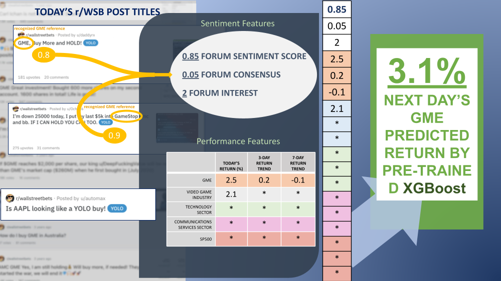

Data Science & AI
Sentiment-Based Trading Strategy
At Forte, I prototyped a pipeline that combined sentiment and stock performance features to predict next-day returns for stocks heavily discussed on r/WallStreetBets that day.
I used natural language processing to identify stock references in post titles and score their sentiment. For those stocks, I calculated three daily features: average sentiment, how much sentiment varied across posts, and how many posts mentioned the stock. I combined these with recent returns and trends for the stock, its industry, its sector, and the broader market in an XGBoost model.
The strategy achieved a Sharpe ratio of 2.7 during periods of heightened activity on WallStreetBets.
Genady Yoffe · Forte
GameStop (GME) example
